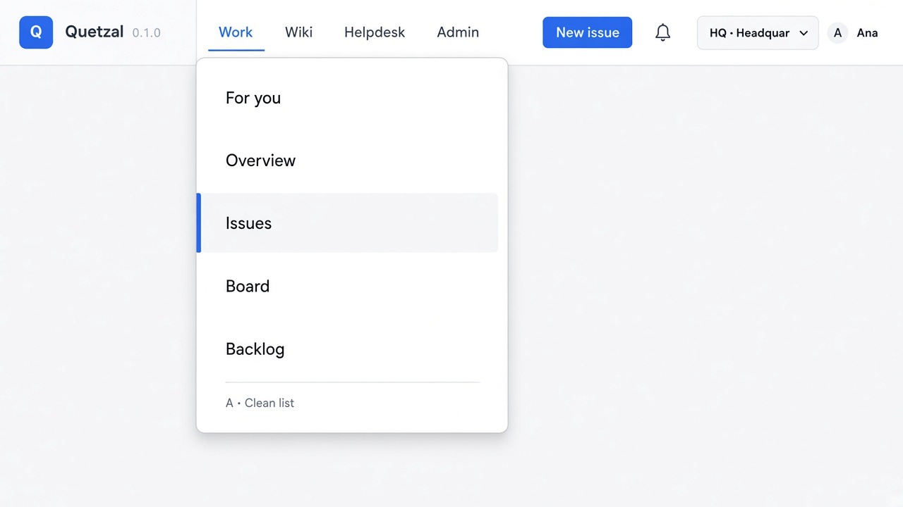
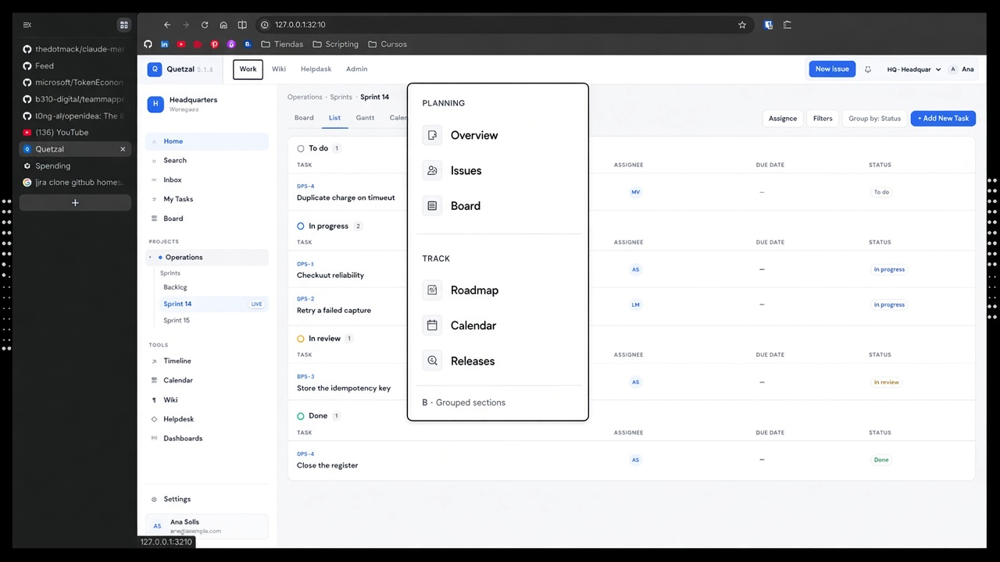
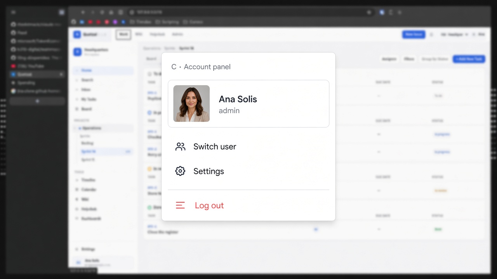
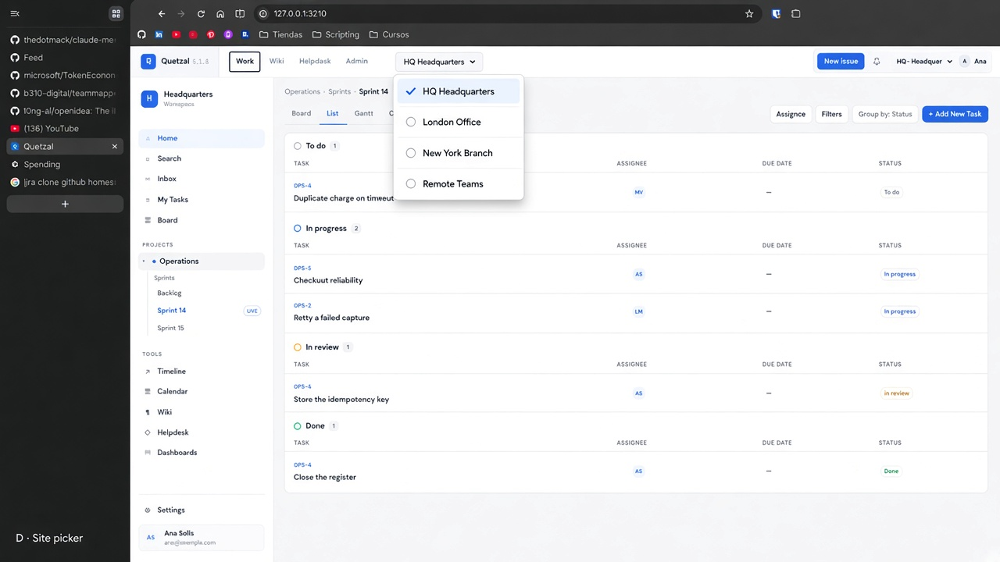
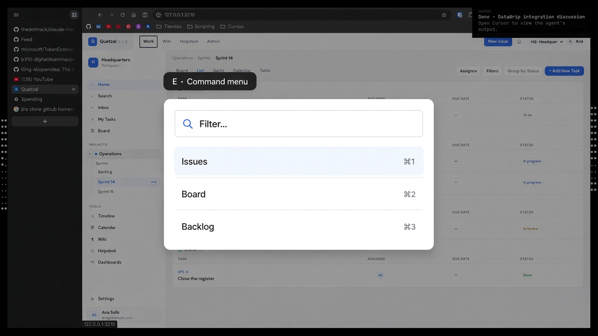

AClean list Lista simple, hover rectangular, activo con barra azul izquierda. Ideal para Work/Wiki. Lean nav  Abrir imagen completa
BGrouped sections Secciones (Planning / Track) con labels uppercase. Mejor si el menú Work es largo.  Abrir imagen completa
CAccount panel Header de usuario + switch de personas + Settings / Log out. Para el menú Ana. Lean account  Abrir imagen completa
DSite picker Selector HQ con check en el activo. Para el dropdown de site.  Abrir imagen completa
ECommand menu Filtro arriba + atajos. Más “Linear”; más trabajo de implementar.  Abrir imagen completa